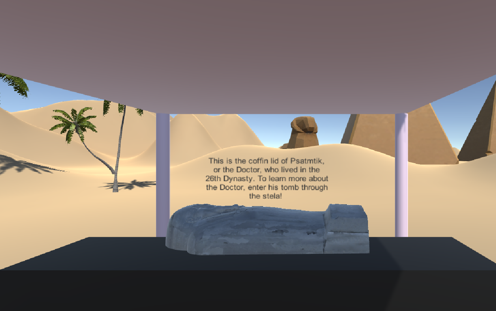

Through a virtual reality seminar taught under the art history department at UC Berkeley, my group and I made a virtual dig site and tomb to encase 3D models of tombs produced by the anthropology department at UC Berkeley. We used Unity, Playmaker, Sketch Up and Unity Assets to create this virtual environment.

We started off by creating a “dig site” where the user could view ancient egyptian artifacts and read descriptions about them when they entered a trigger surrounding the object.

Next, by stepping on another trigger next to our tables of artifacts, the user was transported into a to scale model of a tomb containing “the doctor” – on of the 3D models produced by the anthropology department.
We’re still having trouble getting this program to behave in the Oculus Rift, but overall, given the time and resources constraints, this project is a good starting for a more advanced virtual space about Egyptology.